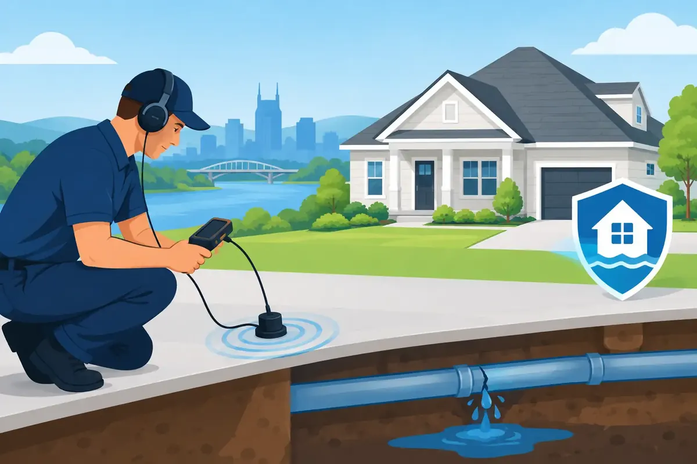

A leaking supply line behind a washing machine can release gallons of water before anyone notices. A slow drip under a bathroom vanity can quietly damage flooring, cabinets, and drywall for months. Leak detectors give homeowners and property managers an early warning, helping them respond before a small plumbing problem becomes a costly restoration project.
For homes and businesses across Middle Tennessee, they are a practical layer of protection, especially in areas where plumbing is hidden behind finished walls, under slab foundations, or in utility rooms that do not get daily attention. The right device depends on the property, the plumbing system, and how much protection you want when nobody is home.
What Leak Detectors Can and Cannot Do
A basic leak detector is a small battery-powered sensor placed on the floor near a potential water source. When its metal contacts touch water, it sounds an alarm. Some models also send an alert to a phone, which is useful for families traveling, landlords between tenant visits, or business owners responsible for an occupied building.
More advanced leak detectors monitor water flow through the main water line. These smart systems look for unusual patterns, such as water running continuously when the house should be quiet. Some can notify the owner, identify possible leaks, and automatically shut off the main water supply when a serious issue is detected.
That distinction matters. A floor sensor can alert you to water that reaches its location, but it cannot stop the flow. A whole-home monitoring system offers more protection, but it needs proper installation and may not recognize every tiny drip right away. Neither option replaces regular plumbing maintenance, but both can shorten the time between a leak starting and someone taking action.
Where to Place Leak Detectors for the Best Protection
The most useful placement is not always the most obvious. Think about the appliances, fixtures, and connections that can leak without being immediately seen.
Water heater and utility room
A water heater should be near the top of the list. Tank-style units can leak from a failed drain valve, corroded tank, temperature and pressure relief valve, or nearby pipe connection. A detector placed in the pan or on the floor beside the unit can provide an early alert. This is especially valuable in garages, closets, basements, and utility rooms where a leak may go unnoticed overnight.
Tankless and heat-pump water heaters also have water connections, drain lines, and components that deserve attention. The equipment is different, but the need to catch unwanted water quickly remains the same.
Washing machine and laundry area
Washing machine hoses are under pressure whenever the supply valves are open. A hose can fail suddenly, and the resulting water damage can spread quickly into adjacent rooms. Place a sensor behind or beside the washer, where it can detect water from a failed hose, loose connection, or drain overflow.
It is also wise to inspect supply hoses regularly. A detector is a helpful warning system, not permission to ignore aging rubber hoses or loose fittings.
Under sinks and behind toilets
Kitchen and bathroom cabinets can hide small leaks for a long time. Sensors beneath sinks can catch drips from supply lines, shutoff valves, disposal connections, and drain traps before cabinet bottoms swell or mold develops.
Behind toilets is another smart location. A failed supply line, loose tank connection, or damaged wax ring can create water problems that are not always obvious from the front of the fixture. In a home with multiple bathrooms, prioritize guest baths and rarely used bathrooms first because they may go days without a close inspection.
Refrigerators, dishwashers, and ice makers
Refrigerator water lines and dishwasher connections are common trouble spots because they are concealed by appliances. A low-profile detector can fit near the water line behind a refrigerator or in the cabinet space next to a dishwasher. These devices are particularly useful in kitchens with hardwood, laminate, or other flooring that can be expensive to repair after water exposure.
Crawl spaces, mechanical rooms, and commercial spaces
Middle Tennessee properties often have crawl spaces or mechanical areas where leaks can progress unnoticed. A detector may help in accessible areas, but the placement needs to account for moisture, standing groundwater, and seasonal humidity. If a crawl space has recurring moisture, the plumbing issue and the moisture source both need professional evaluation.
Commercial properties can benefit from sensors near water heaters, break-room sinks, restrooms, mechanical equipment, backflow devices, and ice machines. For a business, a water leak can interrupt operations, create safety concerns, and damage inventory or tenant spaces. Monitoring is often most valuable where the building sits empty after business hours.
Choosing Between Basic Sensors and Smart Shutoff Systems
A simple audible sensor is affordable and easy to set up. It works well for a water heater closet, sink cabinet, or laundry room where someone is usually nearby to hear the alarm. Models with phone notifications add peace of mind for homeowners who travel or manage a second property.
A smart water shutoff valve is a larger investment, but it can make sense for homes with a history of leaks, high-value finishes, vacant periods, or aging plumbing. When a monitored system detects abnormal water use, it may send an alert, close the water supply, or allow the owner to shut off water remotely.
The best option depends on your risk. A family that is home most days may be well served by strategically placed sensors and routine plumbing inspections. A landlord managing several units, a homeowner frequently away for work, or a facility manager responsible for a commercial building may benefit more from whole-property monitoring and automatic shutoff capability.
Before purchasing any device, consider battery life, alert volume, Wi-Fi reliability, app requirements, subscription fees, and whether the sensor can fit where it needs to go. A device that sends alerts is only helpful if it stays connected and has a clear plan for who will respond.
Installation Details That Make a Difference
Floor sensors should sit at the lowest point where water is likely to collect. Do not place them where they can easily be bumped, buried under storage, or exposed to normal splashing. Test the alarm after installation and add a calendar reminder to check batteries and connectivity.
A whole-home leak monitoring system should be installed on the main water line by a qualified plumbing professional. Correct placement, secure connections, and proper system setup help prevent false alerts and make sure the shutoff function works when it is needed. Homes with irrigation systems, water softeners, filtration equipment, pool plumbing, or unusual water-use patterns may need additional planning so normal use is not mistaken for a leak.
If your home has a smart shutoff valve, every adult household member should know where the main water shutoff is located and how to operate it manually. Technology is valuable, but a manual shutoff remains essential during a power outage, plumbing emergency, or equipment issue.
Signs You May Already Have a Hidden Leak
Leak detectors are preventive tools, but they should not delay action when there are already warning signs. A sudden increase in a water bill, a water meter that moves when all fixtures are off, damp cabinet bases, musty odors, peeling paint, warm spots on a floor, or unexplained stains on ceilings can all point to a plumbing leak.
Other clues are less dramatic. You may hear water running when no fixture is in use, notice reduced water pressure, or find that a water heater pan is damp. In a commercial setting, recurring restroom repairs, unexplained water usage, or moisture near mechanical equipment deserve prompt attention.
When a leak is suspected, shut off the water if necessary and have the source identified. Drying visible water is not enough if the pipe, valve, appliance connection, or drain line continues to leak behind the surface.
Get the Right Protection for Your Property
Leak detection works best as part of a broader plan that includes sound plumbing repairs, inspected connections, maintained water heaters, and a clear response plan. A qualified plumber can help identify high-risk areas, repair existing issues, and determine whether simple sensors or a smart water shutoff system is the better fit.
Angle Stop Plumbing helps Middle Tennessee homeowners, landlords, and commercial property operators protect their properties with respectful service, upfront communication, and dependable workmanship. If you have noticed signs of a leak or want to add protection before the next plumbing surprise, scheduling an inspection can bring real peace of mind.
Water has a way of finding the smallest opening. Catching it early gives you more choices, less damage, and a much better chance of keeping a minor problem from disrupting your home or business.